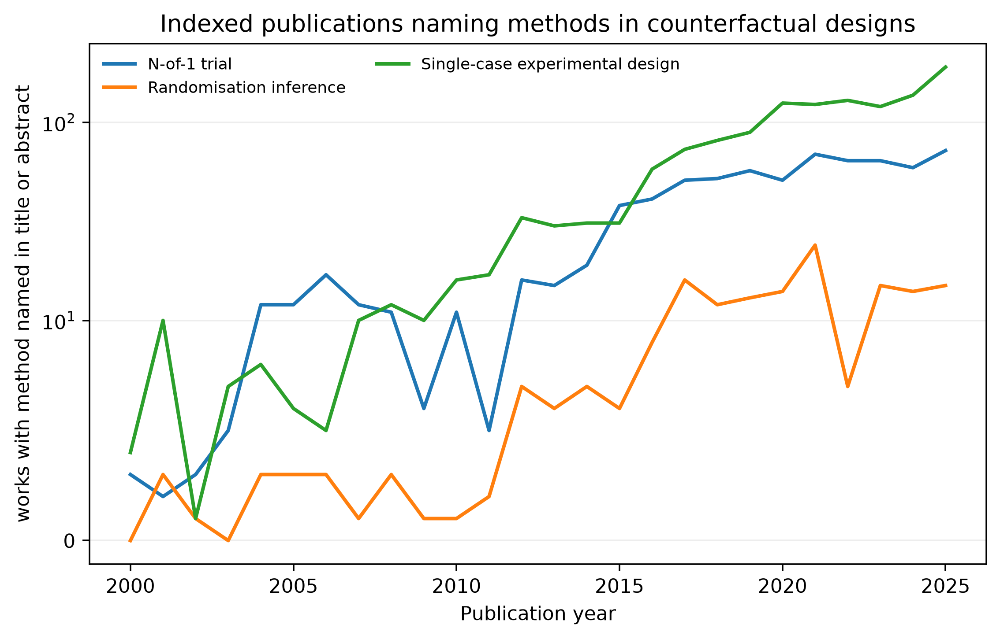
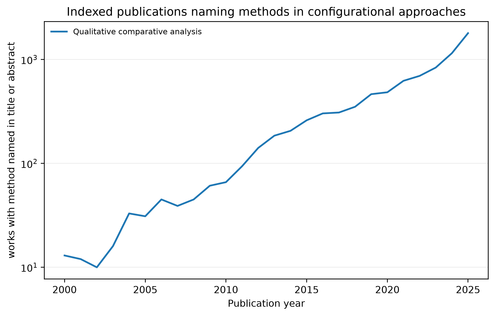
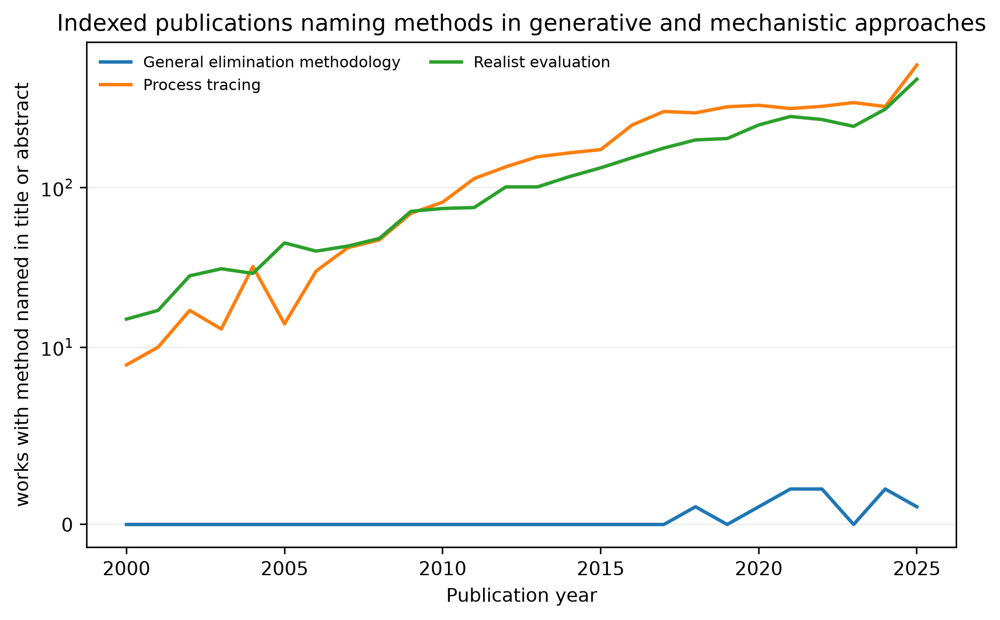
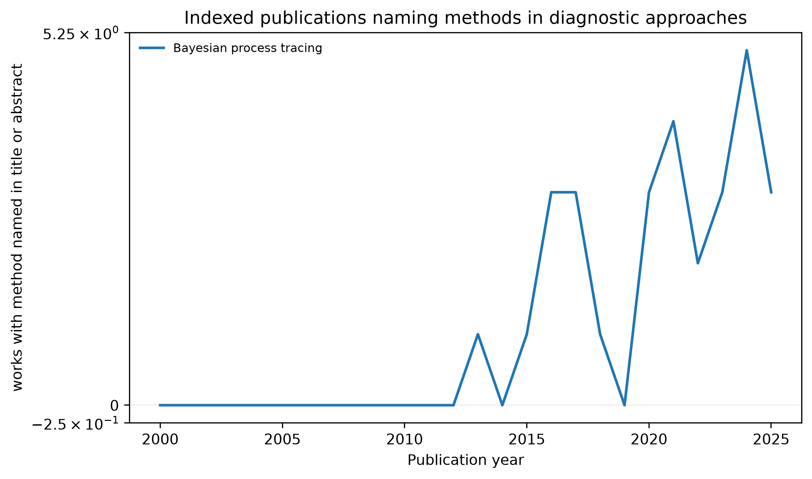
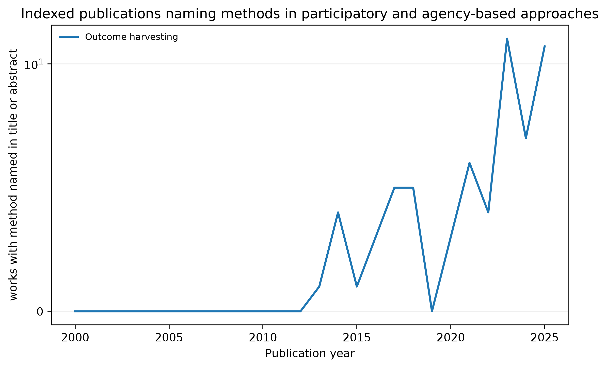

5 The Small-n Methods Literature: A Bibliometric Map
The chapters that follow describe eight components of causal reasoning and the method families built on them. This chapter maps how the corresponding terms appear in the indexed research literature: how many publications name each method, where that literature concentrates by discipline and country, how it has changed over time, and how far the labelled families overlap. The map describes how named small-n methods appear in the indexed literature and helps identify publications for closer review in the method chapters. It does not treat the number of publications as a measure of methodological quality, evaluator capability, or adoption in evaluation practice.
The analysis distinguishes four records of evidence. The raw discovery archive contains every configured expression found in a title or abstract. The core-method corpus contains labels suitable for comparative bibliometric analysis. The supporting-simulation corpus covers agent-based modelling and system dynamics separately. The evaluation and development subsets contain records coded as applications after method relevance has been assessed. Theory of change remains in the discovery archive as a conceptual precursor; it is not counted as a method.
5.1 Questions and units of analysis
The raw archive supports retrieval and audit. The core-method corpus supports cautious description of named-method publication counts, disciplinary and venue distributions, authorship, institutional location, and co-mention between the core method families. Its principal unit is a unique OpenAlex work–method pair. A publication that names two methods contributes one pair to each method, while family totals deduplicate the work within each family.
The validated subset addresses two narrower questions: whether the intended method was used in an evaluation of an identifiable intervention, programme, policy, reform, service, or implementation effort; and whether that evaluation concerns international development. The unit remains the work–method pair because one publication may apply one named method while mentioning another only in discussion. A development application has either an LMIC setting or an explicit development purpose.
5.2 Search strategy
OpenAlex was queried on 2 August 2026 through the works endpoint (OpenAlex, 2026) for publications dated 2000–2025. Each search used the method expressions in Table 5.1. OpenAlex searches titles, abstracts, and indexed full text to retrieve candidate records. The local filter then required a configured expression to appear in the title or abstract. This second step fixes the observable field on which inclusion depends and avoids treating a full-text reference as evidence that the publication discusses the method.
bibliometric_config.py.
| Method family | Method or framework | Bibliometric treatment |
|---|---|---|
| Counterfactual designs | Single-case experimental design; N-of-1 trial; randomisation inference | Methods |
| Configurational approaches | Qualitative comparative analysis; coincidence analysis | QCA is in comparative counts; coincidence analysis requires record-level intent screening |
| Generative and mechanistic approaches | Process tracing; contribution analysis; realist evaluation; general elimination methodology | Contribution analysis requires record-level intent screening; the other labels remain in comparative counts |
| Contextual precursor | Theory of change | Discovery archive only; excluded from bibliometric counts and comparisons |
| Diagnostic approaches | Bayesian process tracing | Method of diagnostic updating |
| Participatory and agency-based approaches | Most Significant Change; outcome harvesting | Outcome harvesting is in comparative counts; Most Significant Change requires record-level intent screening |
| Supporting simulation | Agent-based modelling; system dynamics | Separate supporting-literature appendix; excluded from comparative method counts |
Cursor pagination continues until OpenAlex returns the complete result set. The analysis does not impose a common maximum per method. A testing cap is available in the retrieval script, but the resulting manifest is marked incomplete and downstream scripts reject it by default. Current OpenAlex access requires an API key; the script reads it from the environment or a one-line file outside the repository and does not print or copy it into the output.
The complete retrieval returned 318,950 candidate method–work records. Of these, 281,736 had an eligible publication type. Exact title-and-abstract matching retained 58,328 method–work pairs, representing 57,840 unique works in the raw discovery archive. The comparative core-method corpus contains 18,687 pairs and 18,520 unique works. Supporting simulation contains 29,325 pairs, theory of change 6,370 pairs, and the three labels requiring record-level intent screening 3,946 pairs; none enters the comparative counts. These categories overlap at the work level, so their unique-work totals cannot be added. Table 5.2 shows the search yield and treatment of each expression.
| Method or framework | Treatment | Candidate records | Title/abstract pairs |
|---|---|---|---|
| Single-case experimental design | Core method | 4,149 | 1,356 |
| N-of-1 trial | Core method | 4,021 | 767 |
| Randomisation inference | Core method | 2,568 | 186 |
| Qualitative comparative analysis | Core method | 24,996 | 8,270 |
| Coincidence analysis | Discovery and validated applications only; excluded from comparative surface counts | 1,723 | 323 |
| Process tracing | Core method; intent screen required | 17,174 | 4,482 |
| Contribution analysis | Discovery and validated applications only; excluded from comparative surface counts | 10,791 | 1,715 |
| Realist evaluation | Core method | 26,468 | 3,524 |
| General elimination methodology | Core method | 46 | 9 |
| Theory of change | Contextual precursor | 55,294 | 6,370 |
| Bayesian process tracing | Core method | 88 | 29 |
| Most Significant Change | Discovery and validated applications only; excluded from comparative surface counts | 47,766 | 1,908 |
| Outcome harvesting | Core method | 462 | 64 |
| Agent-based modelling | Supporting simulation | 91,086 | 22,185 |
| System dynamics | Supporting simulation | 32,318 | 7,140 |
| Raw discovery archive | All configured expressions | 318,950 | 58,328 |
The raw JSONL files retain the OpenAlex work identifier, DOI, publication date and type, title, abstract index, citation count, language, primary topic, source, authorships, author identifiers, and institutional identifiers. Nested metadata are retained at retrieval because author names alone cannot support disambiguation or institutional analysis.
5.3 Corpus construction and validation
The automated filter retains articles, reviews, books, book chapters, reports, dissertations, and preprints. It does not exclude records on the basis of language or OpenAlex topic. Language is incomplete in some OpenAlex records, and a common topic exclusion would affect the method families unevenly. Computer-science classifications, for example, include relevant agent-based models, while agricultural and health classifications may contain development applications.
Records are deduplicated by OpenAlex work identifier within each method. Search variants such as British and American spellings therefore do not produce additional observations. The processed files preserve separate tables for works, work–method pairs, and author–institution–work relations. This structure allows method counts to use unique works while authorship analyses use stable identifiers and can apply fractional credit.
Keyword screening marked 28,687 possible evaluation applications; it did not determine final inclusion in the application subset. A reproducible sample of 1,242 records was drawn within each expression and separately for records with and without evaluation-related terms. A balanced first-stage sample of 273 records and a targeted second-stage review of 255 records, including 40 simulation records, have been coded by a reference reviewer. The screen records method relevance, evaluation application, and development application. Records marked as repeated or overlapping are held outside the denominator until their duplicate status is resolved.
The completed review shows why some exact phrases cannot be used as comparative method counts. Coincidence analysis also retrieves event-coincidence and detector procedures in climate science and physics. Contribution analysis retrieves engineering, source-apportionment, and economic decomposition methods. Most Significant Change often describes an outcome or ordinary comparative language rather than the participatory evaluation approach. These records remain useful for discovery, but the three labels are excluded from comparative surface counts. An intended-method record can still enter the evaluation or development subset after screening.
The workflow is described as an automated bibliometric filter with manual validation. It is not a PRISMA screening process or a systematic review of evaluation studies. A later systematic review could use the validated application subset as one source, but it would require additional databases, grey-literature searches, full-text eligibility assessment, and method-specific quality appraisal.
5.4 Analyses and claim boundaries
Publication trends and co-mentions use the comparative core-method records only. Labels with materially different technical meanings are excluded even when they are retained in the raw archive. Changes in counts may reflect publication volume, terminology, indexing coverage, or attention to a method. They do not establish how often evaluators use the method. Supporting simulation is reported separately, and theory of change is not reported as a method count.
Co-mention counts identify works whose title or abstract names methods from two families. The analysis reports both counts and a Jaccard coefficient because the family corpora differ greatly in size. Co-mention does not show that the methods were integrated in the same evaluation; the full text must be examined before making that claim.
Bayesian process tracing contains the phrase process tracing. This nested label is excluded from the family co-mention analysis so that one expression is not counted as evidence that diagnostic and generative methods appear together.
Disciplinary and venue analyses use the core-method surface corpus rather than an equal quota of highly cited publications. OpenAlex’s primary topic is reported as an algorithmic classification, not the publication’s definitive disciplinary location. Citation-selected subsets may still be used to identify prominent publications for reading, but they are not used to describe the structure of the field.
Authorship analyses aggregate by OpenAlex author identifier. Both full and fractional work counts are reported because large teams otherwise receive disproportionate weight. Institutional and geographic summaries use the affiliations attached to each authorship and retain missing affiliations. A high count means that an author appears frequently on publications in the corpus; it does not by itself establish a contribution to method development.
5.5 Results
The results below describe the comparative core-method corpus defined above: 18,687 method–work pairs across nine methods in five families, plus the three intent-screened labels (coincidence analysis, contribution analysis, Most Significant Change) and supporting simulation reported separately. Each result is a description of indexed, title-and-abstract-matched terminology. None establishes how often a method is used in evaluation practice, and each method chapter in Part II repeats the relevant caution before using these counts.
5.5.1 Where the literature concentrates
Figure 5.1 reports each method’s distribution across OpenAlex primary subfields. The families do not share a common home discipline. Qualitative comparative analysis and process tracing concentrate in Sociology and Political Science and in Political Science and International Relations; randomisation inference concentrates overwhelmingly in Statistics and Probability (114 of 186 pairs, 61 per cent); single-case experimental design and N-of-1 trial concentrate in clinical and psychological subfields (Developmental and Educational Psychology, Clinical Psychology, Cognitive Neuroscience for SCED; Statistics and Probability, Psychiatry and Mental Health, Genetics for N-of-1 trials); and realist evaluation concentrates in General Health Professions (595 of 3,524 pairs). Outcome harvesting, the smallest core-method corpus, is too thin to support a comparable subfield claim beyond noting its concentration in Management Science and Operations Research and General Agricultural and Biological Sciences.
The disciplinary split matters for how a method chapter should be read. A reader trained in health sciences will find single-case experimental design and realist evaluation close to a familiar literature, while qualitative comparative analysis and process tracing sit closer to political science and management research. The book’s causal-reasoning framework in Chapter 4 is written to hold across this disciplinary split; the terminology in the source literatures does not.
5.5.2 Publication trends by family
Publication counts naming each family’s methods have grown over 2000–2025, but from very different bases and at different rates. Figure 5.2, Figure 5.3, Figure 5.4, Figure 5.5, and Figure 5.6 show the year-by-year surface-mention count for each family; Chapter 23 reports the same for agent-based modelling and system dynamics, kept separate from the comparative corpus because those traditions are supporting models rather than evaluation methods. A rising count reflects rising use of the terminology in an indexed title or abstract. It does not by itself indicate rising use of the method in evaluation, since indexing coverage and disciplinary output have also grown over the period.





Two contrasts stand out. First, agent-based modelling and system dynamics (Chapter 23) each generate far more surface mentions than any core method family, consistent with their use across engineering, economics, and computer science well beyond programme evaluation; Chapter 13 reads this as a reason for restraint rather than a claim about evaluation use. Second, diagnostic and participatory approaches remain small throughout the period even as their corpora grow proportionally: Bayesian process tracing reached 29 pairs and outcome harvesting 64 pairs by 2025, against several thousand for qualitative comparative analysis, process tracing, and realist evaluation. A small corpus is more sensitive to a handful of publications and supports a correspondingly narrower claim about the shape of its trend.
5.5.3 Where the work is produced
Figure 5.7 reports the institutional-country share of each family’s fractional method–work count. Every family has a substantial United States share, but the next-largest contributor differs sharply: China for configurational approaches (reflecting a large qualitative comparative analysis literature in management and engineering fields), the United Kingdom and Australia for counterfactual designs, the United Kingdom for generative and mechanistic approaches (consistent with the concentration of realist evaluation in UK health-services research), and a thin, geographically scattered set of secondary contributors for diagnostic and participatory approaches, whose corpora are too small to support a stable ranking beyond the leading country.
5.5.4 Overlap between families
Chapter 15 reports title-and-abstract co-mention between the five core method families (Figure 15.1). The result is summarised here because it bears on how the map should be read: explicit co-mention is rare, with the only material overlap between configurational and generative and mechanistic approaches (101 works, a Jaccard coefficient of 0.62 per cent), and no other family pair exceeding 0.02 per cent. The discovery corpus therefore describes five largely separate literatures that happen to converge on a shared inferential logic, not a single integrated field. Chapter 15 explains why this absence of visible co-mention does not itself establish that evaluators fail to combine these methods in practice.
5.6 Reproducibility
fetch_references.py records the date range, API fields, exact queries, OpenAlex result counts, retrieved counts, completion status, page counts, file names, and SHA-256 hashes in retrieval_manifest.json. It also writes a checkpoint after every page so an interrupted search can resume from its last confirmed cursor. screen_references.py produces the work, work–method, author–institution, filter-audit, and validation files together with corpus_manifest.json. analyse_bibliometrics.py records the unit and definition of every derived table in analysis_manifest.json.
The manifests distinguish a successful script run from a complete analysis corpus. Downstream scripts reject a capped or interrupted retrieval unless the user explicitly enables an incomplete test run. The analysis files used for publication must come from a complete retrieval, a completed validation file where application claims are made, and a recorded version of the code and search configuration.
The complete August 2026 raw archive replaces the capped May 2026 corpus. It records publications that name a configured expression in the title or abstract. The two-stage review shows that several expressions have substantial false-match rates. The 28,687 keyword-flagged pairs must not be reported as evaluated applications, and neither the core-method surface counts nor the co-mention matrix measures method adoption or integration.
5.7 Limitations
OpenAlex does not provide complete coverage of donor reports, consultancy outputs, internal evaluations, and other grey literature. The application subset will therefore describe indexed publications rather than the population of development evaluations. Searches based on named expressions miss studies that use a procedure without applying its standard label, while ambiguous expressions can retrieve unrelated work. Manual validation estimates the latter problem but cannot measure studies that the search never retrieved.
Bibliographic metadata also change over time. OpenAlex may update abstracts, topics, affiliations, citation counts, and author disambiguation after the retrieval date. The manifests make a given analysis reproducible from the saved data, but a later API query need not return identical metadata. Trend analyses therefore report the retrieval date and avoid interpreting small year-to-year differences as changes in practice.